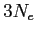
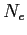

The most correct and predictive tool for the simulation of an electron gas in solid state matter coupled to its electrostatic potential, should be the Schroedinger-Poisson system. Even if some works have been done on this topic, it remains a very difficult and, somehow, open problem. For more informations, read the following very interesting book
L.Ramdas Ram-Mohan, "Finite Element and Boundary Element Applications in Quantum Mechanics", Oxford University Press, 2002
Important problems still remains in the application of the boundary conditions for the Schroedinger equation, and it is very difficult, and for some process still impossible, to take into account all the relevant scattering events. Furthermore, solving Schroedinger-Poisson system is a very difficult task also from the numerical point of view, since the Schroedinger wave-function to be solved is a function in a 
space, where 
is the number of electrons simulated in the device. A solution like this, in realistic devices, is certainly a daunting task from the point of view of computer memory. This is why we use the Monte Carlo method for simulations in GNU Archimedes.
In Monte Carlo electron gas simulations, it is very important to solve correctly both the dynamics of the particles and the computation of the electric field raising from the electron-hole distribution and, eventually, from applied potentials. This is because the charge transport in semiconductor devices is strongly dependent on the electric field, so, if the mentioned electric field is not correctly coupled to the charge dynamics, and correctly computed, all the simulation will be of no utility. This is why, in this chapter, we will explain how the Monte Carlo simulations and the Poisson equation are coupled in GNU Archimedes. This is an important topic for Monte Carlo simulations.